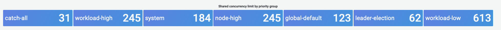

控制平面监控¶
API 服务器¶
在查看我们的 API 服务器时，重要的是要记住它的一个功能是限制传入的请求，以防止控制平面过载。看起来像是 API 服务器级别的瓶颈实际上可能是在保护它免受更严重问题的影响。我们需要权衡增加通过系统的请求量的利弊。为了确定是否应该增加 API 服务器的值，以下是我们需要注意的一小部分事项：
- 请求通过系统的延迟是多少？
- 这种延迟是 API 服务器本身造成的，还是"下游"的东西，比如 etcd？
- API 服务器队列深度是否是这种延迟的因素？
- API 优先级和公平性 (APF) 队列是否根据我们想要的 API 调用模式正确设置？
问题出在哪里？¶
首先，我们可以使用 API 延迟的指标来了解 API 服务器为请求服务所需的时间。让我们使用下面的 PromQL 和 Grafana 热图来显示这些数据。
max(increase(apiserver_request_duration_seconds_bucket{subresource!="status",subresource!="token",subresource!="scale",subresource!="/healthz",subresource!="binding",subresource!="proxy",verb!="WATCH"}[$__rate_interval])) by (le)
Tip
有关如何使用本文中使用的 API 仪表板监控 API 服务器的深入写作，请参阅以下博客
所有这些请求都在一秒钟以内，这是一个很好的迹象，表明控制平面正在及时处理请求。但是，如果情况并非如此呢？
我们在上面使用的 API 请求持续时间的格式是热图。热图格式的好处是，它默认会告诉我们 API 的超时值 (60 秒)。但是，我们真正需要知道的是，在达到超时阈值之前，什么阈值应该引起关注。作为可接受阈值的粗略指南，我们可以使用上游 Kubernetes SLO，可以在这里找到
Tip
注意这个语句上的 max 函数吗？当使用聚合多个服务器的指标时 (默认情况下 EKS 上有两个 API 服务器)，重要的是不要将这些服务器平均在一起。
不对称流量模式¶
如果一个 API 服务器 [pod] 负载很轻，而另一个负载很重怎么办？如果我们将这两个数字平均，我们可能会误解正在发生的情况。例如，这里我们有三个 API 服务器，但所有负载都在其中一个上。作为一个规则，任何具有多个服务器的东西，如 etcd 和 API 服务器，在调查规模和性能问题时都应该被分解。

随着 API 优先级和公平性的引入，系统上的总请求数只是检查 API 服务器是否过载的一个因素。由于系统现在基于一系列队列工作，我们必须查看是否有任何队列已满，以及该队列的流量是否被丢弃。
让我们使用以下查询来查看这些队列：
Note
有关 API A&F 工作原理的更多信息，请参阅以下最佳实践指南
这里我们看到了集群默认的七个不同优先级组

接下来，我们想看看该优先级组的使用百分比，以便我们可以了解是否有某个优先级级别已经饱和。在工作负载低级别限制请求可能是可取的，但在领导选举级别丢弃则不可取。
API 优先级和公平性 (APF) 系统有许多复杂的选项，其中一些选项可能会产生意外的后果。我们在现场看到的一个常见问题是，增加队列深度到一个程度，以至于它开始增加不必要的延迟。我们可以使用 apiserver_flowcontrol_current_inqueue_request 指标来监控这个问题。我们可以使用 apiserver_flowcontrol_rejected_requests_total 来检查丢弃。如果任何存储桶超过其并发性，这些指标将是非零值。

增加队列深度可能会使 API 服务器成为延迟的重要来源，因此应谨慎操作。我们建议谨慎创建队列的数量。例如，EKS 系统上的份额数是 600，如果我们创建太多队列，这可能会减少需要吞吐量的重要队列中的份额，如领导选举队列或系统队列。创建太多额外的队列可能会使正确调整这些队列的大小变得更加困难。
要专注于您可以在 APF 中进行的简单有影响的更改，您只需从未充分利用的存储桶中获取份额，并增加使用率达到最大值的存储桶的大小。通过智能地在这些存储桶之间重新分配份额，您可以减少丢弃的可能性。
有关更多信息，请访问 EKS 最佳实践指南中的API 优先级和公平性设置。
API 与 etcd 延迟¶
我们如何利用 API 服务器的指标/日志来确定是 API 服务器存在问题，还是 API 服务器上游/下游存在问题，或者两者都存在问题。为了更好地理解这一点，让我们看看 API 服务器和 etcd 是如何相关的，以及如何容易对错误的系统进行故障排查。
在下图中，我们看到 API 服务器延迟，但我们也看到这种延迟很大程度上与 etcd 服务器相关，因为图中的条形图显示大部分延迟发生在 etcd 级别。如果在 API 服务器延迟 20 秒的同时 etcd 延迟 15 秒，那么大部分延迟实际上发生在 etcd 级别。
通过查看整个流程，我们看到不仅仅关注 API 服务器是明智的，还要寻找表明 etcd 处于困境的信号 (即慢速应用计数器增加)。能够仅通过一瞥就快速找到正确的问题区域，这就是仪表板强大的原因。
Tip
本节中的仪表板可在 https://github.com/RiskyAdventure/Troubleshooting-Dashboards/blob/main/api-troubleshooter.json 找到

控制平面与客户端问题¶
在这张图中，我们正在寻找在该时间段内完成时间最长的 API 调用。在这种情况下，我们看到一个自定义资源 (CRD) 在 05：40 时间段内调用了最高延迟的 APPLY 函数。

有了这些数据，我们可以使用 Ad-Hoc PromQL 或 CloudWatch Insights 查询从审计日志中提取该时间段内的 LIST 请求，以查看这可能是哪个应用程序。
使用 CloudWatch 查找源¶
指标最好用于找到我们想要查看的问题区域，并缩小问题的时间范围和搜索参数。一旦我们有了这些数据，我们就希望转向日志以获得更详细的时间和错误。为此，我们将使用 CloudWatch Logs Insights 将日志转换为指标。
例如，要调查上述问题，我们将使用以下 CloudWatch Logs Insights 查询来提取 userAgent 和 requestURI，以便我们可以确定是哪个应用程序导致了这种延迟。
Tip
需要使用适当的 Count，以避免拉取 Watch 上的正常 List/Resync 行为。
fields *@timestamp*, *@message*
| filter *@logStream* like "kube-apiserver-audit"
| filter ispresent(requestURI)
| filter verb = "list"
| parse requestReceivedTimestamp /\d+-\d+-(?<StartDay>\d+)T(?<StartHour>\d+):(?<StartMinute>\d+):(?<StartSec>\d+).(?<StartMsec>\d+)Z/
| parse stageTimestamp /\d+-\d+-(?<EndDay>\d+)T(?<EndHour>\d+):(?<EndMinute>\d+):(?<EndSec>\d+).(?<EndMsec>\d+)Z/
| fields (StartHour * 3600 + StartMinute * 60 + StartSec + StartMsec / 1000000) as StartTime, (EndHour * 3600 + EndMinute * 60 + EndSec + EndMsec / 1000000) as EndTime, (EndTime - StartTime) as DeltaTime
| stats avg(DeltaTime) as AverageDeltaTime, count(*) as CountTime by requestURI, userAgent
| filter CountTime >=50
| sort AverageDeltaTime desc
使用此查询，我们发现有两个不同的代理运行大量高延迟的 list 操作。Splunk 和 CloudWatch 代理。有了这些数据，我们可以决定删除、更新或用另一个项目替换此控制器。

Tip
有关此主题的更多详细信息，请参阅以下博客
调度器¶
由于 EKS 控制平面实例运行在单独的 AWS 账户中，我们将无法为这些组件抓取指标 (API 服务器除外)。但是，由于我们可以访问这些组件的审计日志，我们可以将这些日志转换为指标，以查看是否有任何子系统导致了扩展瓶颈。让我们使用 CloudWatch Logs Insights 来查看调度器队列中有多少未调度的 pod。
调度器日志中的未调度 pod¶
如果我们可以直接在自管理的 Kubernetes (如 Kops) 上抓取调度器指标，我们将使用以下 PromQL 来了解调度器积压情况。
由于我们无法在 EKS 中访问上述指标，我们将使用下面的 CloudWatch Logs Insights 查询，通过检查在特定时间段内有多少 pod 无法调度来查看积压情况。然后我们可以进一步深入研究峰值时间段的消息，以了解瓶颈的性质。例如，节点无法快速启动，或者调度器本身的速率限制器。
fields timestamp, pod, err, *@message*
| filter *@logStream* like "scheduler"
| filter *@message* like "Unable to schedule pod"
| parse *@message* /^.(?<date>\d{4})\s+(?<timestamp>\d+:\d+:\d+\.\d+)\s+\S*\s+\S+\]\s\"(.*?)\"\s+pod=(?<pod>\"(.*?)\")\s+err=(?<err>\"(.*?)\")/
| count(*) as count by pod, err
| sort count desc
这里我们看到调度器的错误说 pod 未部署是因为存储 PVC 不可用。

Note
必须在控制平面上启用审计日志记录才能启用此功能。限制日志保留期也是一种最佳实践，以免随着时间的推移产生不必要的成本。以下是使用 EKSCTL 工具启用所有日志记录功能的示例。
Kube 控制器管理器¶
与所有其他控制器一样，Kube 控制器管理器也有限制它一次可以执行多少操作的限制。让我们通过查看 KOPS 配置来查看一些这些标志，在 KOPS 配置中我们可以设置这些参数。
kubeControllerManager:
concurrentEndpointSyncs: 5
concurrentReplicasetSyncs: 5
concurrentNamespaceSyncs: 10
concurrentServiceaccountTokenSyncs: 5
concurrentServiceSyncs: 5
concurrentResourceQuot aSyncs: 5
concurrentGcSyncs: 20
kubeAPIBurst: 20
kubeAPIQPS: "30"
这些控制器在集群高度变化的时候会有队列填满。在这种情况下，我们看到 replicaset 控制器在其队列中有大量积压。

我们有两种不同的方式来解决这种情况。如果运行自管理，我们可以简单地增加并发 goroutine，但这将对 etcd 产生影响，因为 KCM 将处理更多数据。另一种选择是使用部署上的 .spec.revisionHistoryLimit 减少 replicaset 对象的数量，从而减少对该控制器的压力。
其他 Kubernetes 功能可以进行调整或关闭，以减少高变更率系统中的压力。例如，如果我们的 pod 中的应用程序不需要直接与 k8s API 通信，那么关闭将投影机密投射到这些 pod 中将减少对 ServiceaccountTokenSyncs 的负载。如果可能的话，这是解决此类问题的更可取的方式。
在我们无法访问指标的系统中，我们可以再次查看日志以检测争用情况。如果我们想查看在每个控制器或聚合级别上正在处理的请求数量，我们将使用以下 CloudWatch Logs Insights 查询。
KCM 处理的总体量¶
# 查询来计算来自 kube-controller-manager 的 API qps，按控制器类型分割。
# 如果您看到任何特定控制器的值接近 20/秒，它很可能看到了客户端 API 限制。
fields @timestamp, @logStream, @message
| filter @logStream like /kube-apiserver-audit/
| filter userAgent like /kube-controller-manager/
# 排除与租约相关的调用 (不计入 kcm qps)
| filter requestURI not like "apis/coordination.k8s.io/v1/namespaces/kube-system/leases/kube-controller-manager"
# 排除 API 发现调用 (不计入 kcm qps)
| filter requestURI not like "?timeout=32s"
# 排除 watch 调用 (不计入 kcm qps)
| filter verb != "watch"
# 如果您想获取来自特定控制器的 API 调用计数，请取消注释下面的适当行：
# | filter user.username like "system:serviceaccount:kube-system:job-controller"
# | filter user.username like "system:serviceaccount:kube-system:cronjob-controller"
# | filter user.username like "system:serviceaccount:kube-system:deployment-controller"
# | filter user.username like "system:serviceaccount:kube-system:replicaset-controller"
# | filter user.username like "system:serviceaccount:kube-system:horizontal-pod-autoscaler"
# | filter user.username like "system:serviceaccount:kube-system:persistent-volume-binder"
# | filter user.username like "system:serviceaccount:kube-system:endpointslice-controller"
# | filter user.username like "system:serviceaccount:kube-system:endpoint-controller"
# | filter user.username like "system:serviceaccount:kube-system:generic-garbage-controller"
| stats count(*) as count by user.username
| sort count desc
关键要点是，在研究可扩展性问题时，要查看路径中的每一步 (API、调度器、KCM、etcd),然后再进入详细的故障排查阶段。通常在生产环境中，您会发现需要对 Kubernetes 的多个部分进行调整，才能使系统发挥最佳性能。很容易无意中对症状 (如节点超时) 进行故障排查，而不是更大的瓶颈。
ETCD¶
etcd 使用内存映射文件来有效地存储键值对。有一种保护机制可以设置可用内存空间的大小，通常设置为 2、4 和 8GB 限制。数据库中的对象越少，etcd 在对象更新时需要清理旧版本时就需要做的清理工作就越少。清理对象旧版本的这个过程称为压缩。在进行了多次压缩操作之后，会有一个后续的过程来恢复可用空间，称为碎片整理，这个过程会在超过某个阈值或固定的时间间隔后发生。
我们可以做一些与用户相关的事情来限制 Kubernetes 中的对象数量，从而减少压缩和碎片整理过程的影响。例如，Helm 保留了较高的 revisionHistoryLimit。这会在系统上保留旧对象，如 ReplicaSets，以便能够执行回滚。通过将历史记录限制设置为 2，我们可以将对象数量 (如 ReplicaSets) 从十个减少到两个，从而减少系统的负载。
从监控的角度来看，如果系统延迟以一定模式出现峰值，并且间隔几个小时，检查这个碎片整理过程是否是源头会很有帮助。我们可以使用 CloudWatch Logs 来查看这一点。
如果您想查看碎片整理的开始/结束时间，请使用以下查询：
fields *@timestamp*, *@message*
| filter *@logStream* like /etcd-manager/
| filter *@message* like /defraging|defraged/
| sort *@timestamp* asc